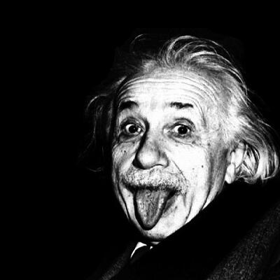
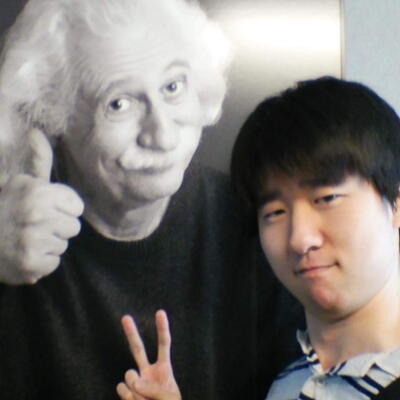

アインシュタインの紹介


 プロフィール
プロフィール
ドイツ生まれのユダヤ人の理論物理学者。
特殊相対性理論および一般相対性理論、相対性宇宙論、ブラウン運動の起源を説明する揺動散逸定理、光量子仮説による光の粒子と波動の二重性、アインシュタインの固体比熱理論、零点エネルギー、半古典型のシュレディンガー方程式、ボーズ＝アインシュタイン凝縮などを提唱した業績により、20世紀最大の物理学者とも、現代物理学の父とも呼ばれる。特に彼の特殊相対性理論と一般相対性理論が有名だが、光量子仮説に基づく光電効果の理論的解明によって1921年のノーベル物理学賞を受賞した。
音楽学者でモーツァルト研究者のアルフレート・アインシュタインは従弟と見なされる場合があるが、無関係説もある。
数多くの業績のほか、世界中に広くその存在が認知されており、しばしば天才の代名詞としても引き合いに出される。1999年、アメリカのニュース週刊誌『タイム』は、アルベルトを『パーソン・オブ・ザ・センチュリー』（20世紀の人）に選出した。
彼から、クリエイターを目指す君へのメッセージ
「一見して馬鹿げていないアイデアは、見込みがない。」
「挫折を経験した事がない者は、何も新しい事に挑戦したことが無いということだ。」
「困難の中に、機会がある。」
「何かを学ぶためには、自分で体験する以上にいい方法はない。」
「空想は知識より重要である。知識には限界がある。想像力は世界を包み込む。」
「私は、それほど賢くはありません。ただ、人より長く一つのことと付き合ってきただけなのです。」
「自分自身のことについて誠実でない人間は、他人から重んじられる資格はない。」
「天才とは努力する凡才のことである。」
「大切なのは、疑問を持ち続けることだ。神聖な好奇心を失ってはならない。」